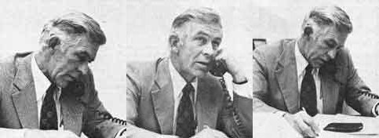
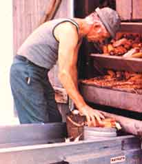

Pennsylvania is far more rural than most of us realize: of its 12 million residents, three and a half million (a larger number than in any other state) live in non?urban areas.
Pennsylvania is also a great deal more important agriculturally than we generally suppose. It ranks seventh in the nation in tobacco production, sixth in the slaughter of hogs, fifth in the production of grapes and chickens and milk, fourth in apples and peaches and tart cherries, third in eggs, and-alone?produces more of this country's cultured mushrooms (140,500,000 pounds, or 61 % of the annual U.S. crop) than all the other 49 states put together.
Altogether, the Keystone State produces over $1 billion worth of farm products annually. Or, to put it another way, Pennsylvania is not just your casual agricultural state.
And Jim McHale, Secretary of Agriculture for the state of Pennsylvania from January of 1971 to December of 1975, was most certainly not your casual modern secretary of agriculture.
For one thing, he didn't enter office straight from an exalted executive position in some huge agribiz corporation. Nor had he spent 15 or 20 years teaching in one of the country's agricultural colleges. (What the heck! Jim McHale didn't even make it to college as a student, much less a professor!)
And for another, McHale took office determined to make the Pennsylvania Department of Agriculture responsive to the real needs of all the farmers and all the other three and a half million rural residents of the Keystone State. Maybe even the real needs of the eight and a half million urban citizens of Pennsylvania, too, if that's what was necessary. But, at any rate, responsive to the real flesh-and-blood needs of real people . . . and not the dollar and power demands of the corporate agribiz establishment.
And so, before the "good ole boys"of corporate agriculture could even believe what was happening, McHale was holding hearings throughout Pennsylvania on the subject of rural poverty. He was taking money out of Penn State University's comfortable dead-end "research" projects and plowing it directly into rural housing, health, sewage, and transportation programs. He was passing out free plants and low-cost seeds to 300,000 poor people who were willing to raise their own anti?inflation gardens. He was promoting farmers' markets and co-ops that allowed small producers to sell meal, fruit, and vegetables (at much higher prices than they'd normally receive on the farm) directly to inner city blacks and other urban residents (at much lower prices than they'd normally pay at big city supermarkets).
Naturally, the guys in the middle?the dealers, processors, distributors, and wholesalers getting fat, rich, and powerful at the expense of the family farmer on one end and the consumer on the other-didn't like these and other related programs at all. So they launched a campaign that eventually forced McHale out of office.
It is to Pennsylvania Governor Milton Shapp's everlasting credit, however, that he immediately put Jim right back on the Keystone State's payroll as Special Coordinator for Rural Planning and Programs. And that s where McHale is today . . . happily rocking the boat and making large waves for the big, vested agribiz interests in the state of Pennsylvania.
But wouldn't it be great if we could put a man like this into office as the United States Secretary of Agriculture (are you listening, Jimmy Carter)? At least that's what some of MOTHER's staffers have been asking each other for the past three or four years. And that's what we've been asking each other with even greater intensity since Kennedy Maize and Ed Vitale recently conducted the following interview with Jim McHale in his Harrisburg, Pennsylvania office.
PLOWBOY: Jim, you've been a farmer all your life, haven't you?
McHALE: Well not quite. Actually I was nine years old before I got my real start in agriculture. You see I was born in western Pennsylvania about 10 miles from the Ohio line?in 1928. And my father, who was a railroad man, died in 1933 . . . when I was five years old. This was in the middle of the depression and times were pretty tough back then for my mother. But she married David Royer, a veterinarian, when I was seven. And when I was nine, he bought a little 35?acre farm out of James town, Pennsylvania, on the road to Kinsman, Ohio.
Well I thought that place was just grand. I used to ride my bike or a horse out there every chance I got. And when I was big enough to see over the dash, I'd drive out in the family car. You couldn't keep me away from there. I lolled to work on that farm . . . or the neighbors' farms, for that matter. By the time I was 14 I could husk 80 bushels of corn, tie the fodder, and set it up. All in one day.
PLOWBOY: Did you eventually take over that 35?acre farm?
McHALE: No. When I was 15 I went to work for Don Leach. Don had one hell of an operation. He had 112 acres of his own and he farmed four or five other places besides. His barn was 108 feet long and he milked 50 cows-altogether he ran well over 100 head of cattle, which was a lot for a farm in that part of the country in the early 40's?and he owned a truck and drove a milk route.
Don was really in the Big Time as far as I was concerned. So I went to work for him when I was 15, and boy did I learn to farm! I drove the tractor and did all kinds of farming chores. I even delivered milk before I had a driver's license . . . I'd finish the route every morning before I went to school.
PLOWBOY: And this was . . . . ?
McHALE: This was in the early 40's, during World War II. Students were allowed to take off two days a week at that time, to do farmwork. And I really took advantage of those two days. I could earn two dollars a day every day I hired out back then, which wasn't too bad for a teenager. And when I husked corn or dug potatoes, I was paid four dollars a day. Hot dog! That was real money, and I saved almost everything I made. By the time I was 18, I had $2,000.
And then, two weeks after I'd graduated from high school, Don called me up to his room. He'd been having trouble with his throat and he was sick in bed and, at the time, he thought it was serious. Anyway, he asked me how long I planned to stick around.
"Well," I said, "I think I'm going to study to be a vet, like my stepdad. He's offered to loan me $5,000 for college . . . but I'll stay on here with you until the crops are in this fall. "
And Don said, "It seems to me you'd make a pretty good farmer. Why don't you just buy this place instead?"
And I said, "With what?"
And he said, "Well, you've already got $2,000 . . . and your stepdad's offered to loan you another five for college. Maybe he'll loan you that five as part of your down payment on this place. "
And that's what happened. My stepfather loaned me $5,000, my mother loaned me another two, and I already had two. That made $9,000 . . . which was enough to cover a down payment on Don's farm, cattle, dairy equipment, and the milk route. I even took over his lease on an adjoining 200 acres and Don financed the whole deal for me at $100 a month.
PLOWBOY: And there you were at 18, a full-fledged farmer.
McHALE: It was 1946, I was 18 years old . . . and I was farming over 300 acres, milking 38 cows morning and night, and driving a milk route. I got married a year or two later. And as soon as I was 21 I borrowed money from Farm Production Credit and paid Don off. I never did go to college.
PLOWBOY: It sounds as if you were too busy working.
McHALE: I was. I worked day and night. When we were putting the crops in I'd go a week at a time without shaving or taking a bath or going to bed. I'd just come in and lie down on the couch for a few minutes and then grab a plateful of something to eat and go right back out to the fields. I sometimes joke that my boy didn't even know who he was up until the time he was about 10 . . . before that he thought his name was "Hurry".
PLOWBOY: Did all that hard work pay off?
McHALE: Well, at first, it seemed to. I'd been reading Farm Journal and Pennsylvania Farmer and the other publications in the field. And they were all preaching that the only way to go was to work harder and get more efficient and get bigger and squeeze your neighbor off his land. This was today's agribiz line, you see, back in the late 40's . . . and I fell for it hook, line, and sinker.
We damn near worked ourselves to death. But we bought that adjoining 200 acres, and we built bigger and bigger silos?I had the first 20 X 60-footer with a 60-foot auger feed in our neck of the woods?and we built a 40 X 80-foot addition onto the barn, and just did everything we could to make our operation more efficient.
And, by golly, we were efficient. Farmers were going out of business all around us?all over the country?but we were hanging right in there and getting bigger and more efficient all the time.
But then I began to notice that we were also getting deeper and deeper into debt all the time too. Here I was-one of the most efficient farmers around and doing everything the big agribiz publications told me I should do?and I was up to my neck in debt.
Of course the agribiz guys had an answer for that, too. They said that being in debt was a good thing. They said that that was the way General Motors, the largest corporation in the world, operated . . . and that if it was good enough for General Motors, it was good enough for us farmers.
What they didn't say, though, was that General Motors?which controlled one hell of a chunk of the automobile business in this country and other parts of the world?could just jack up the prices of all its new cars every year . . . or any time it felt like it. Could and did. Whereas not a single one of us little farmers enjoyed that kind of privilege. As a matter of fact, the more we improved our efficiency and the more we produced, the more we glutted the market . . . and the less we were paid for what we had to sell.
PLOWBOY: Which meant that . . . .
McHALE: Which meant that during the 25 years after World War II all the manufactured machinery, gasoline, feed, and fertilizer that farmers bought went up and up and up . . . while the price of the grain and meat and milk and eggs they had to sell went down and down and down.
There's the real result of your agribiz "efficiencies" for you. The most important thing they've done is bust the little farmer, force people off the land and into the cities, and increasingly consolidate the production and processing and distribution of food in this country and other nations into the hands of just a few big multinational corporations. It's a shameful thing. It's a dangerous thing.
PLOWBOY: Dangerous?
McHALE: Dangerous. Bid business and bid government now own or directly control almost all the resources and means of production in the world. They own or directly control the mines, the oil wells, the factories . . . virtually everything, but that portion of the world's farmlands that is still in the hands of the family farmer.
The family farmer today is the last holdout against a complete corporate takeover of our lives. If the family farmer isn't saved, the people will no longer own the land . . . will no longer control their food supplies . . . and will, therefore, no longer control their destiny. And when that happens we'll no longer have any freedom. Period. We'll live in a corporate fascist state.
PLOWBOY: Perhaps that's something of an overstatement.
McHALE: Is it? I've been thinking about this and checking into the idea for some time, and I've learned some things that I still find hard to believe.
Did you know, for instance, that only 12 landholders now own over half the state of Maine? Or that just 25 control 52% of California? Or did you know that the Tenneco corporation got a $21 million tax refund in 1970 because of its involvement in agriculture? Does a family farmer ever get that kind of tax break`?
See. We're not talking about farming efficiency with these huge corporations. What we're really talking about is sheer, raw economic power . . . resources and money that are derived from other businesses and then used?with the help of the government?to lower agricultural prices and drive the little farmers off the land. That's not farming efficiency. That's the beginning of monopolistic control!
PLOWBOY: The beginning, maybe . . . but, gee, it'll take a long time to turn that into a real monopoly.
McHALE: Will it? Let's look at the vertical and horizontal stranglehold that just a few big corporations already have on our whole food distribution system.
Go into any of the large chain supermarkets and look at all the different brand names on the shelves and you'll think there's a lot of competition in the field. But then start reading the small print on all those labels and you'll soon learn something else. Only four or five corporations control over half of almost any given food line. Del Monte alone supplies 16% of all U.S. canned goods. Campbell's totally dominates the canned soup business in this country. Just four companies control 90% of the breakfast food industry.
And what do these corporations do for you and me? To a large extent, they spend billions of dollars every year to persuade us to buy whatever kind of junk food they decide to sell. In some cases that "food" is mostly sugar and not even really fit to eat. So what are we paying for? The advertising that made us buy the package in the first place! It's a vicious circle.
And how much does the farmer actually get for the wheat in that dollar box of cereal? Pennies! Maybe two or three cents. All the rest goes for advertising and packaging and processing and sugar and profit to the cereal company. And even that isn't enough for these corporations. So they take a product like Wheaties and they add a half-cent of vitamins to it and they call it total and then they charge 15 cents a box more 'this is total, all right. An almost Total rip-off of the consumer.
And the original producer, the individual farmer, isn't doing any better. The monster corporations are screwing him too. Take the big Russian grain deal, for instance. Most people think the farmers made a windfall profit on that one. All the man in the street ever hears is how wheat suddenly skyrocketed to $6.00 a bushel. What he doesn't know is that six multinational, American-based grain companies control most of the grain movements in the whole world! And those six corporations didn't let the price of wheat go up until they had nearly all the '73?'74 harvest in their hands.
The farmers sold that wheat for less than $4.00 a bushel. And it was only after the big grain traders controlled almost all of it at that figure that the price was jumped to $6.00 a bushel. The little guy?the individual farmer?got shafted. The people who made the money were all old cronies of Earl Butz. They were all big grain dealers.
PLOWBOY: Man! You surely don't think much of the big agribiz interests, do you?
McHALE: I've been fighting these "bigger is better" guys for 20 years. They're always harping about the efficiencies of scale and how the farming and food industries should be consolidated for efficiency. And what they really mean is that all the little people in the farming and food business should wrap up their land and their life's blood-everything!-into one neat package and hand it over to the big guys on a silver platter. I realized that with stark clarity for the first time back in 1957.
PLOWBOY: What happened then?
McHALE: Well there I was, a damn efficient dairy farmer but in debt up to my neck . . . and all of a sudden?under Eisenhower's administration?the price of milk began to slip badly.
Now we were sending our milk to the processor in 10 gallon cans at the time and, especially in the summer, you had to try to keep those cans cold?in a springhouse or a refrigerated cooler?from tile time they were filled until the processor's truck came to pick 'em up. And then they'd rattle around in the truck all the way to the milk plant and they probably wouldn't stay as cold as they should and it was awfully hard to get that milk all the way to the plant in first?class condition.
So I was interested?in 1957?when Beverly Farms, a Pittsburgh processor, sent representatives around promising us dairy farmers a substantially better price for our milk. They said that if we'd switch from our unrefrigerated 10-gallon cans to refrigerated 600-gallon bulk tanks that Beverly Farms would send special bulk trucks out to pick our milk up. And that the milk would get to the plant in so much better condition when handled by this "bigger and better" system, that Beverly would be able to guarantee us a price of $5.75 a hundred pounds.
Well this sounded pretty good. The Beverly representatives, in fact, showed me how I would have been $1,718 ahead of the game if I had only been selling my milk to them under this new system during the first six months of that year. So I talked 20 of my neighbors into investing $3,000 to $5,000 each and we all went to bulk tanks.
PLOWBOY: And?
McHALE: And after we'd made the investment, the people at Beverly paid us what they damn well pleased. I remember one load that went in during February 1958 on which they paid us five different prices . . . prices that varied as much as a dollar a hundred, all on the same bulk load of milk.
PLOWBOY: Well couldn't you just quit selling to Beverly Couldn't you start selling to another processor?
McHALE: No. That's just the point. Beverly Farms was the only plant in the area at the time that was set up to handle milk from bulk tanks. We were locked in.
So a few of us went down to see the plant's owner and the meeting didn't last very long. He said he'd changed his way of paying for milk and that if we didn't like it we could quit in the morning.
Well the situation just got worse and worse. By August of 1959 we were down to $3.06 a hundred take?home for our milk. This was less than it cost us to produce it and that man was just taking our farms away from us through those bulk tanks. So I organized 29 of the 33 farmers who sent milk to Beverly Farms and we held a three?week strike as Focal 205 of the Teamsters Union. We were the only Teamsters local of dairy farmers in the United States at that time.
PLOWBOY: I'll bet that shook some people up!
McHALE: It shook me up, I'll tell you that. I sure learned a couple of things from that strike.
Number one, I learned that our government's agricultural agencies didn't really give two hoots in hell about the real needs of the small farmer. Just before and during that strike a whole swarm of county agents, milk economists, and people from Penn State University's extension services came in to see us. Not to help us, mind you . . . but to "educate" us. They came in and handed us that same old agribiz party line . . . that the price of milk was really high enough and that it was all our fault if we couldn't make a living selling our product at Beverly Farms' price. They told us we should get busy and get more efficient and produce more and that everything would be all right.
But, damn it, that's what we had been doing. And look where it had gotten us?We'd been working like dogs and expanding and producing more and more . . . and all it had done was make it possible for a milk processor to sit back and bleed us to death. Criminy! The last time those extension agents came out we damn near picked 'em up bodily and threw 'em right out of the county.
So that's one thing I learned: That, except for a few good people here and there, the whole agricultural establishment of the federal and state governments in this country has already been bought and paid for by the big agribiz interests. For the most part, those government agencies are simply no longer interested in helping the little guy.
PLOWBOY: And what's the second thing you learned from the strike?
McHALE: That just because you finally settle such a confrontation doesn't mean you get what you bargained for. The Teamsters sold us out.
Our new contract guaranteed us a 70% Class One market but we never did get it. The union kept promising that the issue would be negotiated and that, at the end of the year, we'd be paid the difference between what we were actually getting and what we were supposed to get. But then the Teamsters signed another contract with the plant and we never did get our back pay. According to my calculations, Beverly Farms still owes me $2,500 on that deal alone.
PLOWBOY: It sounds as if the deck was really stacked against you.
McHALE: It was. But I was good and mad by that time so I got a copy of the Pennsylvania milk control law and I dug around and I found that the state's milk marketing board had set the price to be paid to farmers at something like $6.25 a hundred. But we weren't getting anything near that and I wanted to know why.
So, to make a long story short, I went to see an attorney?F. Joseph Thomas?in Meadville and I called together 30 or 40 dairy farmers and we had a meeting. And as a result of that meeting we called another one, and 400 farmers showed up! And that was the beginning of the Western Pennsylvania Milk Producers Association. We all kicked in dues of a dollar a cow per year?that figured out to about $12,000?and we started looking into Pennsylvania's milk marketing practices.
PLOWBOY: And what did you find?
McHALE: All kinds of illegal activities, kickbacks, and deals. We found that while the dairy farmers were being screwed on one hand, the consumers of the state were paying millions of dollars more every year than they should have for milk on the other. As a result, Pennsylvania had?and still has?the lowest per?capita consumption of milk and dairy products of any state in the union.
PLOWBOY: Still has?
McHALE: Oh sure. The work we began back there in 1959, 1960, 1961 has paid off to some extent?it brought about the exposure of a $3.2 million kickback in Pittsburgh in 1965, for instance?but the Pennsylvania consumer is still paying far more than he should for milk. And the kickbacks now come out of Omaha and New York City, instead of Pittsburgh. I've testified about this to the state senate and Governor Shapp has proposed a couple of bills that would do away with the retail price fixing of milk in Pennsylvania . . . but the legislators here in the state won't do anything about it.
PLOWBOY: Win some, lose some.
McHALE: That's about where it stands right now . . . but we haven't given up yet.
PLOWBOY: Tell me, Jim, did that organizing of 400 farmers into the WPMPA in 1959 or '60 eventually lead you into politics?
McHALE: I guess my political turning point came in 1961 when I was contacted by a representative of the National Farmers Union. For the first time I began to realize that the battle I was fighting went far beyond what the Western Pennsylvania Milk Producers could do.
I'd just made the point to this guy, see, that I couldn't really go out and organize for the Farmers Union because I was already tied up with the group I'd put together. And then he picked up the phone and made a call to Orville Freeman?who was the new Kennedy administration's secretary of agriculture?and got F. Joseph Thomas and me invited to a national meeting of farm groups. I was impressed.
I was even more impressed after I'd made that trip to Washington and sat in Secretary Freeman's office and heard speeches by Jim Patton, the president of the National Farmers Union, and Hubert Humphrey. By golly, I'd never heard anyone speak the way Senator Humphrey spoke! He put me right up on the edge of my chair 15 years ago, and I've been there ever since.
PLOWBOY: I take it you were already a Democrat.
McHALE: Well my dad had been a Democrat but he'd died, remember, when I was only five. And my stepdad, the elders of our church, and all our town leaders were Republican. The people I'd borrowed money from when I was building up my farm?all the people I'd dealt with were Republicans. It never occurred to me to be anything different.
But then, in the late 50's as I started to get fed up with the whole agribiz approach to farming, I began to notice that the American Farm Bureau Federation seemed to be all for agribiz and that it always seemed strongest when Republicans were in power. And I noticed that the National Farmers Union seemed to be more for the little guy and that it always seemed to have more say when the Democrats were in office.
And besides that, I'd just had a good feeling about Kennedy so I'd already switched and registered as a Democrat in order to vote for him. So, yeah. I was a Democrat when I made that trip to Washington.
And those guys at that meeting got me so damn fired up that I came home and, in addition to milking 70 cows and doing all the other farmwork I had to do, I put on 1,200 members for the National Farmers Union that summer . . . the summer of '61.
PLOWBOY: Wow!
McHALE: I really drove myself. I honestly thought I could change the whole system single-handed in just one year. Then, as I began to realize what a job it was really going to be to bring about the change I wanted, I sold my cows and went into grain farming, so I'd have more time for the union.
Well, one thing led to another and I sold the big farm in '64 and went to work for the union full time. Then I sold the little farm in '67. It wasn't until I bought my new spread of 170 acres in January of '73 that I really got directly back into farming again. I was just too busy organizing for the union and working to put Democrats into office. And then, of course, once we'd helped Shapp get elected Governor of Pennsylvania, he asked me to be his state secretary of agriculture.
PLOWBOY: What did you find when you went into office, Jim?
McHALE: I looked at the Pennsylvania Department of Agriculture and I couldn't believe what F saw. It was a passive, negative agency set up to do strictly regulatory work. There were no forward, affirmative programs to promote the farmers' bargaining position or research the marketing of farm products or boost farm income or help rural development or do anything else that would improve the quality of country life and help a farmer and his family stay on the land.
Almost every nickel the department had was mandated for the licensing of dogs or the certification of plant health or the control of communicable disease in cattle or the checking of scales for accurate weight or some other regulatory function.
PLOWBOY: The federal and most of the other state departments of agriculture in this country spend their money the same way.
McHALE: I know . . . but that doesn't make it right! Sure we've got to do these things. But we've got to do some other things too. I don't think this country can survive if the family farm doesn't survive. And the family farm isn't going to survive if the rural community doesn't survive. And the rural community isn't going to survive unless somebody or something with some muscle begins to look out for it and to plan for its future.
PLOWBOY: And you think that the federal and state departments of agriculture should be that "somebody or something"?
McHALE: Are there any other agencies better qualified? Listen. When I went into office I studied the makeup of Pennsylvania's population of 12 million, and I found that 3.5 million of those people lived in rural areas. They weren't all farmers by a long shot . . . but 3.5 million of Pennsylvania's people lived out there in what we call rural areas.
And you know what else I learned? None of those 3.5 million people had a real spokesman in our government. There were all kinds of representatives in the department of labor and the department of this and the department of that standing up for our urban residents. And every year millions and millions of dollars were getting spent by well-meaning people who were trying to correct our urban ills.
But nobody was standing up for our rural population. If you lived out in the country and you had a problem, that was just your tough luck.
That's the way the state looked at it anyway . . . but, actually, it was everyone's tough luck. Why? Because it was apparent to anyone who studied the problem?it was apparent to me, at least?that all those urban problems that everyone was so excited about solving today were really only yesterday's rural problems once removed.
PLOWBOY: What do you mean by that?
McHALE: When I went into office one of the big questions was why had 400,000 people left Pennsylvania during the 60's. Four hundred thousand! This was the largest outmigration that any state in the nation had suffered during that period. Why were so many people leaving Pennsylvania? It raised some serious questions about the quality of life in our state.
So I looked into the matter and I found that 357,000-more than seven out of every eight!?of that total outmigration had left our rural areas. And they 'had left because of lack of opportunity, and lack of public transportation, and lack of affordable medical services, and lack of sanitation facilities. Those people had left our rural areas during the 60's, in other words, for most of the same reasons that people in the 70's are leaving our urban areas. If you don't solve these problems when they first pop up out in the country, you're only going to have to face them?on a much more massive scale?a few years later when those same problems move to the cities.
PLOWBOY: But where . . . how do we begin? How did you begin?
McHALE: I started in 1971 by trying to bring Pennsylvania's rural problems out into the open where we all could see them. But since my department didn't have a budget for such an investigation?it didn't even have a single bureau that concerned itself with people, for tripe's sake?I had to get help from some other agencies of the Pennsylvania government to do even that.
So I asked the Governor if we could cut across departmental lines?I asked him if the department of agriculture could work with the departments of health and community affairs and some other departments-to make the whole state government more responsive to the problems faced by our rural people. And Governor Shapp agreed completely with the idea. He even suggested that I get the legislative branch of government involved.
So Bill Wilcox, the Secretary of Community Affairs, and I put together a committee chaired by Senator Pat Stapleton and we went right out into the rural areas of Pennsylvania and, we held hearings. We got some people from the department of welfare involved and we asked the local senators and representatives to work with us as we went into their districts and we really got down to brass tacks. We really zeroed in on the problems that our rural people were facing.
And we uncovered some incredible things. We found, for instance, that there was more substandard housing in rural Pennsylvania, with 3.5 million people, than there was in urban. Pennsylvania, with its population of 8.5 million. There were people living under just some horrible conditions out there.
PLOWBOY: For example?
McHALE: We held one hearing in Indiana, Pennsylvania . . . right in the middle of the coal mining country. And a lady came in from Stump Creek, a little town nearby. And she had some water in a quart jar that she'd taken from Stump Creek's city water system. There was a half inch of sediment in that jar and the water looked like coffee. But that didn't tell the whole story because the woman had skimmed off the green gook and filtered out the tadpoles before she'd brought the sample in. Anyway, this so?called water was costing her $7.50 a month and she'd been without even that for a total of 30 days during the previous year.
And, as if that weren't bad enough, the sewer system that she and the other residents of Stump Creek were living with was little more than an open ditch.
PLOWBOY: Why? How had this come about?
McHALE: Well this had been a company town back in the big coal mining days. And when the mine had shut down, the company had sold the town?lock, stock, and barrel to a real estate agency that, for this discussion, will remain nameless. And the agency was obviously more interested in the rent it was receiving from Stump Creek's residents than it was in keeping the town's houses or water system or sewers in good repair.
PLOWBOY: OK. But level with us, Jim. Did that hearing do any real good? Or did Stump Creek go right back to "business as usual" once your hearings moved on to another part of the state?
McHALE: Oh no. This story had a happy ending. Once the facts were out we persuaded the Institute of Man and Science in Rensselaer, New York to buy Stump Creek. And then, through grant and loan money the Institute was able to attract, the town was completely refurbished: new water system, new sewer system, renovated homes.
And best of all?for about $5,000 per building?the residents of the community were able to buy, instead of rent, their homes. The Institute came out of the program with no profit and no loss . . . and a whole rural community was saved. All at no cost to the taxpayers!
PLOWBOY: Beautiful! That's great! You actually did some good. Did your hearings delve into any other subjects?
McHALE: Oh sure. We looked into the need for some sort of organized health care program for rural people. And that led us to the question, "How do you get to a doctor or a clinic if you're a 65-year-old widow, without a car, living on $1,500 a year, 15 or 20 miles from the nearest town?"
PLOWBOY: Transportation! If you don't own an automobile today, our society really has you at a disadvantage . . . especially if you're poor, elderly, in ill health, and live out in the sticks.
McHALE: Exactly.
PLOWBOY: But what could you do once you had these situations out in the open? Suddenly trying to provide health care and some sort of public transportation for hundreds of thousands of isolated, elderly people where these services haven't existed before is one hell of a big undertaking. Could you do it?
McHALE: No. Not overnight. We didn't have any money for such programs. But I found a $402,000 contract that had been let to Penn State University to study the diet of mink. And I thought, "Boy. Mink must be pretty important to Pennsylvania if we're spending that kind of money just studying what they eat."
But then I learned that there were only 57 members in the state's association of mink growers and they were as upset about the research grant as I was. The report they got back every year consisted, basically, of one sentence: "Dry diets are as good for mink as wet ones, and the dry diets are more economical because they don't require refrigeration."
And besides that, there were 12 other land grant colleges throughout the country doing exactly the same research on the diet of mink and coming up with exactly the same answer. So I canceled the Penn State research grant. And I put that money into a pilot health screening program?just like we already had in the cities?for rural people.
PLOWBOY: And?
McHALE: We had people coming in for checkups that hadn't seen a doctor in 10 years. People who had cancer, lots of it treatable. People who were going blind and needed only a relatively minor operation so they could see again. That demonstration project really paid off . . . so well, in fact, that it was picked up and expanded in Pennsylvania by the department of health and other agencies.
PLOWBOY: And what about the need you'd uncovered for some sort of rural transportation program?
McHALE: We really took the leadership in the nation on that one. The Pennsylvania Legislature had passed a bill to subsidize urban mass transportation with money from the state lottery. So I got hold of the Governor and asked him to think about our rural population when he signed the bill. And he told me to get together with the department of public welfare and set up a demonstration project and he'd see that we had a budget to work with.
And we did. We had buses running and a phone number that people could call for rides. And we found that 70% of the people using that service were widows, over 65, and living on less than $1,500 a year. This service was just a godsend to them. For the first time in years they could get out to see a doctor, or go to church, or get in to the county seat to conduct business.
So the Governor let me expand our pilot program into 23 counties and appointed me chairman of a task force to develop a totally integrated rural transportation system for that area. And I testified in Washington before the U.S. Department of Transportation and we got a large grant for the project. And one of these days, somehow, we're going to wind up with a solid, nationwide transportation system that serves us all.
PLOWBOY: What about the fundamental questions of farm income and food prices?
McHALE: We got into those too, of course. During our original hearings we listened to a lot of farmers who testified?and they had the receipts to prove it?that all their costs had just skyrocketed out of sight . . . but that they were actually receiving less for everything they had to sell than they'd received back in 1948. Of course I already knew this, but it was an eye?opener for some of the other members of the committee. For the first time they realized that our farmers don't work for themselves anymore. They work for the banker, the machinery companies, the oil companies, the fertilizer outfits. And they just go deeper and deeper into debt every year.
PLOWBOY: What could you do about that? What have you done about it?
McHALE: Well this is a tough one. Tough because the problem is so big. It goes far beyond Pennsylvania or, for that matter, even the whole United States. This trend for the big agribusiness interests to just squeeze and squeeze and squeeze until independent farmers can't afford to produce and consumers can no longer afford to buy is a worldwide problem. The giant multinational corporations that have a headlock on everything are getting too big for national governments to deal with . . . let alone the state of Pennsylvania.
PLOWBOY: But that hasn't stopped you from trying, has it?
McHALE: Oh no. We've been givin' 'em hell the best we can. Those hearings we held in '71 were only the beginning. As long as I was Pennsylvania's secretary of agriculture-and ever since?I've been hammerin' away on the theme that, thanks to the agribiz rip-off, our family farmers can no longer afford to produce and our consumers can no longer afford to buy.
I've given addresses on the subject, I've testified before Congress in Washington, I've put the message across with hearings here in Pennsylvania, I've said it over and over on TV and radio and in the newspapers, and I've worked with everyone I can who's been attacking the problem.
PLOWBOY: You got involved pretty deeply with U.S. Senator Fred Harris and Jim Hightower, the head of the Agribusiness Accountability Project, didn't you?
McHALE: Sure did. They put together something called the Food Action Campaign and I was proud to be a part of it. It was all coordinated out of Washington, D.C., and I hit 26 major cities across the country on that one. We'd start out in a town at 6:00 or 6:30 in the morning on radio or TV and then work all day long giving television and radio and newspaper interviews and speaking to AFL-CIO and other groups.
We just blitzed the country telling people how the agribiz interests were exploiting the farmers on one hand and the consumers on the other. And then we wound up the whole campaign by testifying before Congress in Washington. We urged that the federal government bust up the agribiz monopolies and put a little free enterprise back into the farming and food industries.
PLOWBOY: And this was when?
McHALE: Back in '72.
PLOWBOY: And what was the result of all that effort?
McHALE: Well not a great deal happened right then. It's hard to move Congress, you know. But a good number of the things we were talking about back in '71, '72, '73 are starting to get pushed along now. Senator McGovern and some of the others have sponsored a bill to set up a commission that'll investigate the food processing and distribution system in this country. And Joe Vigorito has gotten a bill through Congress?it's now been signed by the President?that'll provide money and technical assistance to the states for their departments of agriculture to use in the establishment of direct farmer-to-consumer marketing projects. These things take time, but they're coming along.
PLOWBOY: They may take time, but that doesn't mean we've got to sit around and wait for them to trickle through Congress. As you well know. At least you certainly haven't been sitting around waiting for them.
McHALE: No. We've managed to keep pretty busy. Joe's direct marketing bill, for example, came straight out of the direct marketing pilot projects we've been running here in Pennsylvania. We used $40,000 of department of agriculture funds to hire some consumer coordinators. And those coordinators then worked to put farmers directly in touch with consumer buying clubs and inner city black self-help groups across the state. And they worked to set up open air farmers' markets in a number of cities.
The whole idea, you see, was to open up channels that farmers could use in marketing their produce directly to the consumer. We were trying to do two things: help the little farmers sell their products at a higher price than the processors would pay them, and help the consumers buy their food for less money than the agribiz marketing system charged.
PLOWBOY: Were you successful?
McHALE: Oh the whole program was just a huge success. Right here in Harrisburg, for example, the open?air market is open two days a week from June to the end of October. An average of 5,000 customers go through each day and purchase an average of $9,000 worth of produce.
This is a great program and we'd like to see farmers and consumers in other states get in on it. In fact, if anyone wants to know how to organize one of these markets all he or she has to do is write to the Bureau of Markets, Pennsylvania Department of Agriculture, 2301 North Cameron Street, Harrisburg, Pennsylvania 17120 and we'll send out a booklet that contains all the information. No charge.
PLOWBOY: You've done a thing with gardens too, haven't you?
McHALE: Yeah. In 1974 we set up a project tailored after the Victory Gardens of World War II. We gave 400 welfare families each some shovels and hoes and rakes and seeds and plants and a 20 X 30-foot garden space. And then we kept track of what they harvested and found that those 400 families each came out an average of $256 to the good.
Governor Shapp was so pleased with that demonstration project that he kicked off an Anti-Inflation Garden Program the next year.
You know those little packages of seeds that are sold in the hardware stores for 39 to 59d each? Well we made a deal with a seed company that agreed to put a selection of 10 of those packages together for us for a total price of 51.9 each, if we'd buy 'em 100,000 at a time. And we started 400,000 tomato and cabbage plants in our state research centers and other institutions and gave 'em away on a first come, first served basis to low-income people. And we followed that up by plowing up five-acre tracts of state-owned land at 25 different locations across Pennsylvania and dividing those pieces of land into 20 X 30-foot plots for gardens. And we let people come in and raise vegetables on those plots.
And the whole thing worked just great. People got a real chance to get their hands and feet into the soil and see where their food comes from. They saved money. They gained self-confidence. And it was really wonderful to see a 75-year-old, poor black man working alongside a 30-year-old, $20,000-a-year government employee . . . and talking and trading vegetables! Damn, that was satisfying. That's the way government programs should work!
PLOWBOY: What was that other thing you did with food . . . the thing with the meat?
McHALE: Oh that was in October of 1974, when a farm woman from up by Scranton called me on the phone. She was in tears. She'd just sold a 90 pound calf and, after the trucking and commission were taken out, she'd netted $2.50. And this was when meat was hitting all?time highs in the supermarkets.
So I went out and I bought a 1,450-pound cow the following week for 15 cents a pound . . . the going price that farmers were being paid for that kind of cow at the time. And I sent her up to the meat evaluation center at Penn State. Ana I told the people there to butcher that cow and pull out the top cuts just the way the local grocery store would do it and to figure what those cuts were worth. And I told them to subtract the value of those cuts from what I'd paid for the cow and to grind the rest of the meat into hamburger and to let me know what that hamburger had cost me . . . including the cost of butchering and dressing out the meat, everything. And the computer printout showed the cost of that hamburger to be 291/2 cents a pound.
Now this was very interesting, because hamburger was selling all across Pennsylvania that week for $1.09 a pound. So I gave my information to the Governor and he publicly proposed that the state set up cooperatives that would buy and butcher cows and make the meat available to senior citizens' centers at cost.
Well that really upset the industry. As soon as the meat packers thought that Pennsylvania might get into the meat business, the price of hamburger dropped to 89d. It dropped from $1.09 to 89 cents within 10 days. The industry was really upset.
So I called a meeting in my office. I invited the chain stores, the cattlemen's association . . . everyone in the industry. And I passed my computer printout around the table and I asked if anyone could find anything wrong with it. I said that if anyone could, I'd make a public apology. But nobody could find a mistake in our figures.
So then I took a look at the printout and I said, "Gentlemen, these figures are wrong. We forgot that the offal, hide, and blood of that cow had a value too. We could have deducted another $45 to $50 from the cost of my hamburger. Now I'd like you fellows to go away and study this printout for two weeks. See if you can find any more errors. And if you can, I'll make a public apology to you."
PLOWBOY: So what happened?
McHALE: Every last one of those guys called up before the next meeting and said he couldn't be there. To this day, no one has ever told me that printout was wrong.
PLOWBOY: Jim, you're an amazing fellow. I don't know how you've done all the things you've done since you were appointed Pennsylvania's secretary of agriculture in 1971. We've already talked about some of them . . . but we haven't even had a chance to get to others. Things like the rural housing projects you've set up. Or the fact?unknown to most people, I'm sure?that it was work done by you and Governor Shapp which led directly to the World Food Conference in Rome in late 1974.
I lf we were to go into all those other activities, however, I'm afraid this interview would fill a whole issue of THE Mother Earth News (restricted) And, anyway, I think we've already covered enough of your career to convince our readers that you're exactly the kind of guy we need as the United States Secretary of Agriculture. I surely hope our new President slips you right into that Cabinet position.
In the meantime, what would you try to do if you did, indeed, land in that spot?
McHALE: Oh golly. There are so many things that need to be done. Let me just list a few of the ideas that come to mind.
One, there should be a state as well as a national land policy designed to keep the ownership of farms in the hands of the family farmer. We've also got to put a stop to the paving over of our best agricultural land with superhighways and shopping centers and the like.
Two, the government should get behind a concerted effort to encourage farmers?and show them how?to market their products directly to the consumer. This should be tied to an educational program for consumers that would help them realize the nutritional and the financial benefits of purchasing fresh, unprocessed food directly from the farmer. Urban consumers also should be encouraged to set up food?purchasing cooperatives.
Three, the whole thrust of agricultural education and research should be changed from the present emphasis on ever-bigger and ever-more technologically efficient farming methods . . . to an emphasis on the techniques that will help the family farmer, the consumer, and the planet. The environmental impact of the present energy-intensive agribiz rape of the land is horrendous. It's gobbling up the world's reserves of fossil fuels at the same time it's destroying the soil's capacity to grow food. This just can't be allowed to go on.
Four, there should be a full investigation of the food production, processing, marketing, and distribution systems in this country and the rest of the world. And the purpose of that investigation should be the breaking up of the agribiz monopolies.
Five, we need tax reforms that will eliminate the corporate farms' tax breaks and encourage urban dwellers to go back to rural areas.
Six, we need a national program that will enhance the quality of rural life in this country. Everything that's really important in a basic sense-our food, fiber, raw materials, energy?comes from the country. It's time we stopped relegating our rural residents to a second class citizenship.
And, seven, we should never again allow an agribiz executive to be a state or federal secretary of agriculture!
You know, we can do almost anything once we've decided we want to do it. We can put men on the moon and space probes on Mars. And I believe, once we realize the absolutely terrible ultimate consequences of our present farm policies, that we can phase the big corporations out of agriculture and put this most important of all industries back into the hands of the people.
Rural America has become decapitalized and depopulated during the past few decades. It's dying out there. And when it's finally dead, we're all going to die too. Or, at the very least, our most precious possession-freedom?is going to die.
We can't let that happen. We've got to have a national family farm policy that will revitalize and rejuvenate rural America. We've got to put people back into agriculture. We've got to put the ownership of our land directly back into the hands of families and individuals. Directly into the hands of those who will stop the rape of the land . . . and who will, instead, steward the land and care for it. And we've got to put real, fresh, unprocessed food back onto the tables of America. Real food, at a reasonable price.
And if we don't do these things, I don't have much hope for us. But if we do. . . well, by golly . . . I think everything can still turn out all right.
|
 No newcomer to agriculture, Jim McHale's "hands on" farming experience goes back some 40 years, to when he was a boy. |
 |
|